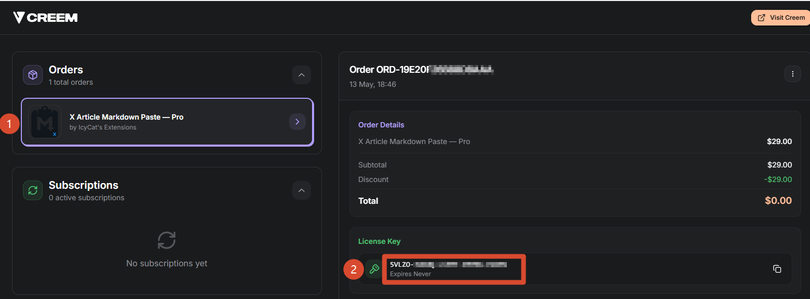

第 1 版 · Chrome 扩展 · X 长文 Vol. 1 · Chrome Extension · X Articles
为 Obsidian 笔记、Notion 导出、本地 .md 和 AI 草稿准备的 Chrome 扩展。图片、表格、封面和推文嵌入会自动导入，发布前你仍然可以在 X 编辑器里检查。 A Chrome extension for Obsidian notes, Notion exports, local .md files, and AI-written drafts. Import images, tables, covers, and tweet embeds, then review everything inside X before publishing.
Title, cover, images, tables and embeds arrive in the editor ready for review.
Features Desk
它解决的不是复制粘贴本身，而是 X 编辑器改版、本地图片、表格和封面带来的不确定性。 The point is not just pasting. It is reducing publishing risk around X editor changes, local images, tables, and cover handling.
外链图片会自动下载，并通过 X 自己的媒体通道上传。本地图片授权目录后也能直接引用。External URLs are fetched + uploaded via X's own media pipeline. Local images work with directory access.
第一个 H1 会作为文章标题，第一张图片会作为封面。也可以在 frontmatter 里用 title:、cover:（或 标题:、封面:）指定。First H1 becomes the article title, first image becomes the cover. Override explicitly via frontmatter title: / cover:.
X 文章不支持表格，扩展会把表格渲染成清晰的 PNG，再自动插入正文。X doesn't support tables? We render to PNG and embed inline at HiDPI quality.
带语言标记的代码块会转成 X 原生代码样式，保留等宽字体和灰底格式。Fenced code with language tag → X native code block (mono, gray bg).
正文里的 X 推文链接会自动变成嵌入卡片，效果和在 X 网页里直接粘贴一致。Tweet URLs are auto-converted to embed cards, just like pasting them on x.com.
不用先复制全文，直接把 .md 文件拖进浏览器，扩展会新建草稿并填入内容。Drag a .md file onto the browser — extension creates a fresh draft and fills it in.
隐私原则：不接入统计，不读取 cookie，也不上传文章内容。所有处理都在你的浏览器里完成。 Privacy principle: no analytics, no cookies read, no article content sent anywhere. Everything happens in your browser.
Subscription Notice
当前线上版本仍是 $29 一次性买断早鸟价。用户数量超过 300 后，将转为订阅制。 The current live version is still a $29 lifetime early-bird license. After the user count exceeds 300, Pro will move to a subscription model.
这是当前早鸟买断价。超过 300 位用户后，新用户将按订阅制购买；已购买的早鸟授权不受影响。 This is the current lifetime early-bird price. After 300 users, new purchases will move to subscriptions; existing early-bird licenses are not affected.
国内早鸟支持价 ¥98，买断使用。没有国际信用卡，或想进微信群交流，可以先在 X 上私信我。 China early supporter price: ¥98 lifetime. If you need local payment help or want to join the WeChat group, message me on X first.
在 X 上私信我 DM me on X to join the WeChat groupReader Questions
.md 文件直接拖进浏览器，让扩展自动新建草稿。
Install from the Chrome Web Store, open the X article editor, then Ctrl+V your Markdown. Or drag a .md file onto the browser to create a fresh draft.
x.com/compose/articles/* 页面工作，不读取你的 cookie 或密码，也不会上传文章内容。详见 隐私政策。
No. The extension only runs on x.com/compose/articles/*, doesn't read your cookies or password, and uploads zero article content. See Privacy Policy.
付款后，Creem 会向你购买时填写的邮箱发送订单确认邮件（标题大致是 Your X Article Markdown Paste order）。点击邮件里的 "View Order" / 查看订单，进入 Creem 订单页： Creem sends an order confirmation email (subject roughly Your X Article Markdown Paste order) to the address you entered at checkout. Click the "View Order" link inside the email to open your order page on Creem:
5VLZ0-…-…-…-… 的激活码② License Key panel on the right: copy the 5VLZ0-…-…-…-… key
拿到激活码后，点击 Chrome 工具栏里的扩展图标，把激活码粘贴到 License Key 输入框，然后按回车。每个早鸟激活码最多可在 5 台设备上使用。 Once you have the key, click the extension icon in Chrome's toolbar, paste it into the License Key field, press Enter. Each early-bird key activates on up to 5 devices.